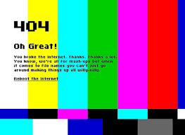

Software's Impact on Hardware
Software is an ordered sequence of instructions for changing the state of the computer hardware in a particular sequence. It is usually written in high-level programming languages that are easier and more efficient for humans to use than machine language. While hardware is important, software is likely the main reason for getting a PC. The hardware simply runs programs that allow us to accomplish our tasks.
They are dependent on each other. Hardware starts functioning once software has been loaded. To deliver its set of instructions, software is installed on hardware. However, software is generally not needed for the hardware to perform its basic level tasks such as turning on and reponding to input.
Programs have different demands in terms of their hardware requirements, so the software one plans to use has an impact on the hardware required.
Moore's Law
Moore's law states that the number of transistors per square inch on integrated circuits doubles every year. In 1975, Moore revised this law and concluded it would instead double every 2 years. He estimated that as more and more programs entered the realm of firmware, with hardware becoming smaller, cheaper, and faster as a consequence of Moore's law, an increasing number of types of functionalities first carried out by software, would join the ranks of hardware.
Intel Microprocessor Architecture
The 32-bit generation of this architecture is also called “x86”. From the software perspective, 64-bit computing implies the use of code with 64-bit virtual memory addresses.
Changing from a 32-bit to a 64-bit architecture is a fundamental alteration because the software manages the actual memory addressing hardware. Thus, most operating systems need to be modified after such a change. Additional software must also be ported to benefit from the added capabilities. Older 32-bit software may be supported either by virtue of the 64-bit instruction set being a superset of the 32-bit instruction set, so that processors that support the 64-bit instruction set may also run code for the 32-bit instruction set, through software emulation, or by the actual implementation of a 32-bit processor core within the 64-bit processor, as with some Itanium processors from Intel, which included an IA-32 processor core to run 32-bit applications.
From Hardware to Software
As a result of the evolution of software and hardware, events ranging from thruster burns to instrument activations, once hard-coded and/or triggered from the ground, can now be software defined and incorporated due to the increase in computational power and memory provided by hardware.
The wireless telecommunication field rapidly advanced from low-gain “bent-pipe” one-shot repeater capability of transmissions to the modern digital high-gain, intelligent noise reduction, store-and-forward data transmission - including conditional bandwidth and retransmission features - all made possible through the greater computational abilities of hardware and upgradable software-defined protocols.